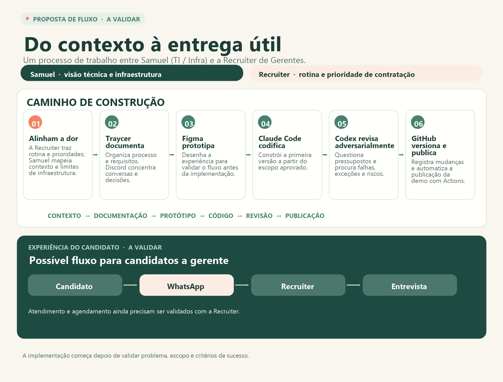

Primeiro contato
Como chegam as pessoas interessadas, quais dúvidas aparecem e que papel o WhatsApp tem no atendimento.
Estamos entendendo como acontecem os primeiros contatos e o agendamento de entrevistas para encontrar uma melhoria pequena, útil e adequada à rotina da recruiter.
Antes de desenhar qualquer ferramenta, queremos enxergar a rotina como ela acontece — incluindo o que funciona e o que toma tempo.
Como chegam as pessoas interessadas, quais dúvidas aparecem e que papel o WhatsApp tem no atendimento.
Como os convites são enviados, como os horários são combinados e onde surgem conflitos ou retrabalho.
Qual é o menor passo que pouparia esforço e como saberíamos que ele realmente ajudou.
A iniciativa está na fase de descoberta. As respostas da recruiter vão orientar a próxima decisão; a ideia é validar o problema antes de escolher como resolvê-lo.
Reunir exemplos do processo, do volume e das dificuldades diretamente com a recruiter.
Comparar possibilidades como um link de agendamento ou um fluxo de conversa, considerando controles e ferramentas existentes.
Alinhar prioridade, escopo e critérios de sucesso antes de iniciar qualquer implementação.
Apresentar um brief com decisões, alternativas, exclusões e pontos que ainda precisam de confirmação.
Samuel contribui com a visão de TI e infraestrutura; a Recruiter de Gerentes traz a rotina e as prioridades. Este é o caminho proposto para construir uma primeira melhoria depois de validar o escopo.

O possível fluxo candidato → WhatsApp → Recruiter → entrevista ainda precisa ser validado com a Recruiter.
O contexto inicial aponta para recrutamento em operações de fast food. Parte das ideias veio de um relato ainda não validado com a recruiter.
Veja as perguntas, o contexto e o histórico que estão guiando esta etapa.
Primeiro, ouvir. Depois, definir juntos o próximo passo.